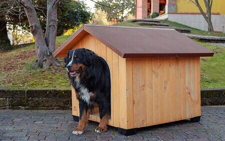

Casa Eco Básico
Precio: $250.000
Descripción:
La Casa Eco Básico es la opción ideal para quienes buscan una solución ecológica, funcional y económica para el bienestar de sus mascotas. Fabricada con materiales reciclados y resistentes, ofrece protección y comodidad en cualquier clima.
Características principales
- Madera plástica reciclada, resistente y ecológica.
- Tornillería galvanizada para mayor durabilidad y resistencia a la corrosión.
- Techo removible que facilita la limpieza y el acceso al interior.
- Base elevada para evitar el contacto con la humedad y la suciedad del suelo.
- Diseño sencillo y funcional, fácil de armar.
- Materiales no tóxicos y seguros para tu mascota.
Beneficios
- Protege a tu mascota de la lluvia, el sol y el frío.
- Contribuyes al cuidado del medio ambiente usando productos reciclados.
- Fácil de limpiar y mantener en óptimas condiciones.
- Durabilidad y resistencia garantizadas.
Dimensiones aproximadas
- Largo: 80 cm
- Ancho: 60 cm
- Alto: 70 cm
Recomendado para:
- Perros pequeños y medianos
- Gatos
- Otras mascotas de tamaño similar
Preguntas frecuentes
- ¿Es fácil de armar? Sí, incluye instrucciones y no requiere herramientas especiales.
- ¿Se puede usar en exteriores? Sí, es resistente a la intemperie.
- ¿Qué mantenimiento requiere? Solo limpieza periódica y revisión de la base.